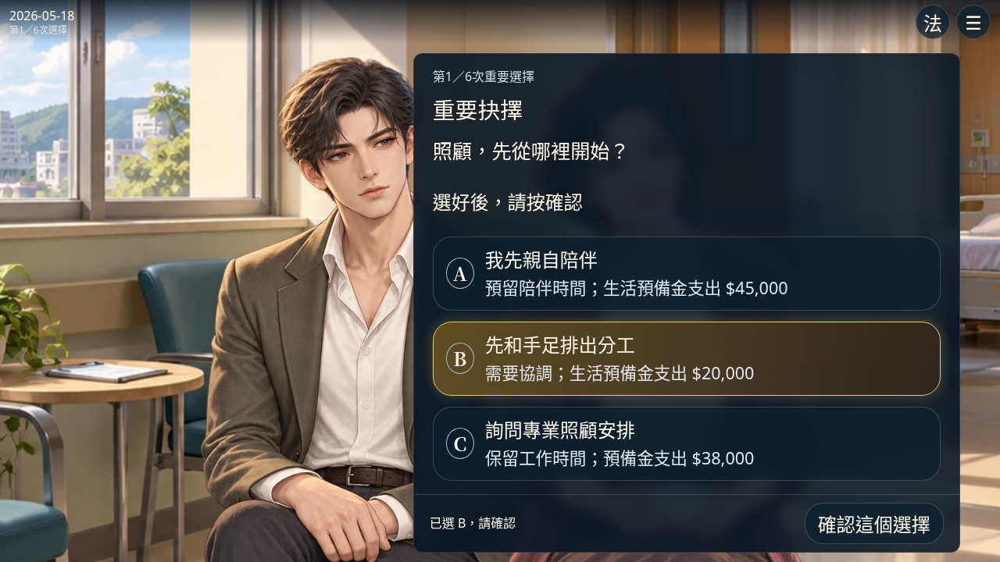
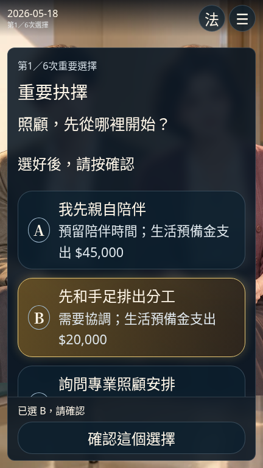

第一卷電影式整合版｜前言 → 六次選擇 → 八種敘事結局
本版使用候選人物與背景素材；正式動畫、法律、稅務與保險計算均未啟用。公開部署與外部HTTPS驗證請參閱GitHub Actions；本機Chromium驗收不等於實體手機通過。


前言原速約82秒；其後為驗收用手動快進，不是建議閱讀速度。影片約99秒，無配音或音樂。完整故事可手動慢讀，沒有閱讀倒數。
82項單元及既有回歸結果｜八結局與主流程｜27組字幕／操作列版面｜窄橫向｜存檔／重看／偏好／分頁安全｜自動播放中途續讀｜獨立前言已讀匯入｜繁體中文檢查
新版：fwe.theatre.volume1.reading.v2；舊版：fwe.theatre.volume1.reading.v1。新版首次啟用時驗證並複製，不覆寫或刪除原v1。經營模式及State v4完全不讀寫。
舊周目維持舊flow與原cursor／line，不強迫插入前言；下一輪才採整合開場。舊字級與動態偏好保留，原逐字設定保留在舊檔，新版採整句電影字幕。前言重看只是旁路閱讀，不進入照顧選擇；重看中重新整理會回到原周目位置。
新周目不清除已完成紀錄；未完進度另存閱讀備份。多分頁只防止舊頁覆寫，不自動合併；提示停止寫入時應保留頁面並處理紀錄。本機容量不足仍可能保存失敗，會顯示提示，不會刪除舊檔。沒有雲端或跨瀏覽器同步。
遷移完成後，舊入口後續的新進度不會自動再匯入新版；兩份原始資料分開保留。未知版本或壞檔維持原資料，沒有不經確認的重設。
| 識別 | 敘事結局 | 可達組合 | 測試選項識別順序 |
|---|---|---|---|
| E1 | 留下可對話的家 | 12 | shared → transparent → independent → evaluate → separate → mediate |
| E2 | 兩間房之外的生活 | 6 | professional → transparent → independent → reserve → separate → mediate |
| E3 | 遲來的一張餐桌 | 108 | shared → promise → independent → evaluate → separate → mediate |
| E4 | 照顧者也需要被照顧 | 45 | personal → promise → independent → evaluate → separate → mediate |
| E5 | 文件很齊，心事未完 | 30 | personal → solo → independent → evaluate → separate → clarify |
| E6 | 誰也沒有先退讓 | 243 | personal → solo → independent → evaluate → separate → legal |
| E7 | 走到談判桌之前 | 81 | personal → solo → independent → evaluate → rushed → clarify |
| E8 | 把答案留給下一頁 | 204 | personal → solo → independent → evaluate → separate → mediate |
共729種組合；這是劇情可達性測試，不是法定繼承、稅額或法院結果。
完整見證路線資料共同分工：手足分工 → 透明預算 → 一起談晚年 → 保留預備金 → 分開盤點 → 協商。觀察關係回應與支出，完成後重新挑戰。
獨自承擔：親自陪伴 → 先答應全部 → 記下口頭心願 → 核對保單影本 → 先談房屋歸誰 → 各自尋求法律途徑。這不是法律必然勝敗。
保持界線：專業照顧 → 透明預算 → 各自尋求專業 → 保留預備金 → 先付費再盤點 → 釐清主張。比較與前兩輪不同的家人反應。
完成的是第一卷整合閱讀、六次選擇、八種敘事結局、續讀重玩與電影式呈現；不是正式法律結算或完整經營模式。
所有人物與場景沿用候選素材，正式動畫美術簽核為0。父母／配偶仍為有限坐姿，沒有完整骨架、端菜／遞單動畫或配音；後續章節以既有候選圖與有限鏡頭呈現，未假稱動畫影集品質。
實體iPhone Safari／Android Chrome／iPad未驗收。工具列收合、瀏海安全區、實機字型與低效能動畫仍需玩家確認。公開HTTP與資源校驗由Actions執行器驗證，本機代理封鎖GitHub Pages，沒有宣稱已在本環境直接試玩公開頁面。
法律、稅務、保險與法院裁量仍待法源核實；父母死亡分別為2029-07-12、2031-10-08兩個事件，未合併財產或移轉權利。候選演出不認定文件有效或保險理賠。
舊版劇場、prologue、dual-stage、人物樣機與原始劇本保持原檔案；比較基準雜湊另存驗證。等待實際試玩，再決定下一步。